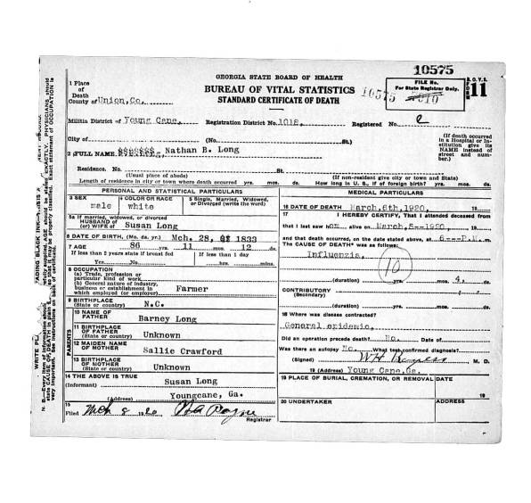

Peter Gilead Long
Of Macon County North
Carolina
(Lived in Cabarrus, Buncombe, Haywood,
and Macon NC)
This Lineage Last
Updated February 2025
1. Peter Gilead Long, Sr. was born about 1760 (in NC according
to 1850 census). Peter, Sr. died after 1850 in North Carolina,
and was buried in North Carolina. NOTE: the middle name Gilead
is family tradition. It is not confirmed in any document to date
married Mary (Polly) Bird,
daughter of Bonner Bird.
Source: Meadow Creek Church records, Stanly Co.
She was born about 1765. She died Sept 1849 at the age of 84
in Haywood County NC. Source: 1850 Haywood Mortality Schedule.
NOTE: family tradition has named both Mary Bird and Elizabeth
Bird as the wife of Peter G. Long Sr.
Haywood Co NC - Revl War Pension
Application of Bonner Bird of Haywood Co NC - "....That
he was Carpenter by trade a house maker but not able to work
being weak feeble and deaf that he has wife aged 67 years . That
they live with Peter Long his son in Law who is a door man..."
- 29 June 1825
Known children of Peter Gilead
Long, Sr. and Mary Bird are:
2 i. James
R. Long b abt 1789 Lived in 1820 Buncombe, was of Haywood
NC when he purchased land in Rabun GA, 1840 Habersham GA, 1850
Rabun GA. m. Mary Griggs
The website
lists the James R. Long above as the eldest son of Peter G. Long.
This James was living near Peter G. Long in 1820 Buncombe census,
and his age fits the census grouping for Peter in 1800 Cabarrus
NC census. Brother Henry G. Long (above) lives near James R.
Long in 1840 Habersham GA.
2 ii Barnard
Long, (aka Bonner) born about 1797, died after 1870.
m. Sarah______
2 iii. Mary (Polly) Long b abt
1798 and married Enoch Underwood in 1817. Family moved to Haywood
NC and Fannin GA
The website
lists the Mary Long above as a daughter of Peter G. Long. She
married in Buncombe NC at the time Peter was living there.
She also fits the census grouping for Peter in 1800 Cabarrus
NC census. And her husband is involved with Peter G. Long later
in legal documents.
2 iv. James C. Long, born 11
Oct 1804 in North Carolina, died 1 Mar 1842, and was buried in
Baptist Cemtery, Cullowhee, Jackson, NC. (ed. note: this James as the son of Peter
G. Long is in dispute)
2 v. Michael
Long, Sr., born Nov 1805, died 8 Apr 1859. m. Elizabeth
Bryson
2 vi. Henry
Gilead Long, born 1816, died after 1880. m. Artimessia
Wood
2 vi. Elizabeth Long b
abt 1820. married William Watson. A descendant claims this lineage
is found in the bible of her son Bartlett Newton Watson. It states
Elizabeth is also the sister of Polly Underwood. Note, there
is an unknown female in the 1820 Buncombe household of Peter
Long age 0-10 (born betw 1810 and 1820). William and Elizabeth
(Long) Watson are living 2 doors down from Henry G. Long and
father Peter Long (age 90) in 1850 Haywood NC census. NOTE:
Elizabeth's birth is unusually late. Mary Long would have been
55 at birth of this daughter.
2. Barnard Long
born about 1797 Lived in Haywood/Macon, Union GA 1850,
died in Jackson NC after 1870. Known as "Barney Long".
He married Sarah "Sally" Crawford. New! She was born 1808.
Known children of Barnard Long
and Sarah Crawford are:
3. (Male) Long,
born 1820-1825
(listed by the website according to census profile)
3 i.. (Male) Long, born about
1825. (listed
by the website possibly James R. Long of 1850 Union/Fannin GA)
3 ii. (Female) Long, born about
1827.
3 iii. Nathan B. Long, born 28
Mar 1833 in North Carolina. He married (1) Susannah Edmondson
28 Dec 1856 in Fannin, Georgia. She was born 1836 in North Carolina.
She was the daughter of Robert A. Edmondson and Mary "Polly"
Harris. Susannah died after 1880. Nathan married (2) Susannah
Justice 13 Sep 1894 in Union, Georgia.
3. Madison
Long b abt 1836 (listed by the website based on Barnard Long
1850 census Union GA)
3 iv. George Marion Long was
born Jun 1842 in North Carolina. George died after 1920 in Jackson,
North Carolina, and was buried in Hooper Cemetery, Caney Fork,
Jackson, NC. He married Elizabeth J. "Betsy" Hooper
21 Oct 1865 in Jackson, North Carolina. She was born 10 Sep 1832
in Cullowhee, Haywood, North Carolina. She was the daughter of
William "Squire Bill" Hooper and Nancy Bryson. Elizabeth
died 5 Apr 1922 in Jackson, North Carolina, and was buried in
Hooper Cemetery, Caney Fork, Jackson, NC.
Known children of George Marion
Long and Elizabeth J. "Betsy" Hooper are:
4 i. Nathan M. "Nath"
Long, born 16 Apr 1866, died 17 Dec 1913.
4 ii. Dora Missouri Long, born
23 Apr 1869, died 25 Dec 1950.
4 iii. Harvey B. Long, born 20
Jun 1870 in Jackson, North Carolina, died 20 Mar 1947 in Jackson,
North Carolina.
4 iv. James E. "Jim"
Long, born 4 Mar 1872, died 24 Aug 1960.
4 v. Nancy Angelina Long, born
1 Apr 1874 in Jackson, North Carolina. She married Nathan "Nath"
Middleton 30 Apr 1891 in Caney Fork, Jackson, North Carolina.
He was born 1871. He was the son of John Middleton and Coe Chastain.
Nancy died 16 Dec 1959 in Jackson, North Carolina.
4 vi. Pilgrim "Pilg"
Long, born 9 May 1877 in Jackson, North Carolina, died 23 May
1952 in Jackson, North Carolina.
3 v. S. L. Long, born 1848. (Listed by the website
as Lavada Long according to Barnard Long 1850 census Union GA)
3 vi. E. N. Long, born 1849 GA.
(Listed
by the website as Elbert Long according to Barnard Long 1850
census Union GA)
Living Scotts
Creek township, Jackson Co NC in 1870
+ Sarah J. _____
age 24 in 1870. b. NC
4. i Mary F.
Long age 5/12 in 1870
2 Michael Long, Sr
was born Nov 1805 in North Carolina. Michael, Sr. died 8 Apr
1859 in Cullowhee, Jackson, North Carolina, and was buried in
Baptist Cemetery, Cullowhee, Jackson, NC. He married Elizabeth
Bryson before 1830 in North Carolina. She was born about 1809
in North Carolina. She was the daughter of Margaret "Peggy"
Bryson. Elizabeth died after 1880.
Known children of Michael Long,
Sr. and Elizabeth Bryson are:
3 i. Michael3 Long, Jr. was born
about 1830/1831 in Cullowhee, Haywood, North Carolina. Michael,
Jr. died about 1857/1858. He married Elizabeth J. "Betsy"
Hooper 31 Aug 1850 in Haywood, North Carolina. She was born 10
Sep 1832 in Cullowhee, Haywood, North Carolina. She was the daughter
of William "Squire Bill" Hooper and Nancy Bryson. Elizabeth
died 5 Apr 1922 in Jackson, North Carolina, and was buried in
Hooper Cemetery, Caney Fork, Jackson, NC.
Known children of Michael Long,
Jr. and Elizabeth J. "Betsy" Hooper are:
4 i. Andrew Columbus Long, born
Aug 1851, died after 1900.
4 ii. Sarah Jane Long, born 1854
in Jackson, North Carolina. She married Dock Owens 10 Jun 1870
in Jackson, North Carolina.
4 iii. John Mitchell "Mink"
Long, born 10 Jun 1855, lived Speedwell, Jackson Co NC; Farmer;
died 29 Mar 1950 age 94. buried Cullowhee Cem. wife died prior
to his death. Father's name on death certificate is listed as
"Mitchell Long" rather than Michael Long.
4 iv. William Clayton Long, born
20 Nov 1857 in Jackson, North Carolina. He married Rebecca Callie
Chastain 1 Mar 1888 in R.A. Nicholson's, Jackson, North Carolina.
She was born 12 Apr 1867. She was the daughter of William Chastain
and Elizabeth Coward. Rebecca died, and was buried in Hooper
Cemetery, Caney Fork, Jackson, NC. William died 4 Apr 1939 in
Jackson, North Carolina, and was buried in Hooper Cemetery, Caney
Fork, Jackson, NC.
3 ii. Unidentified Long, born
about 1833 in Cullowhee, Macon, North Carolina.
3 iii. Peter Gilead Long, Jr.
was born 23 Mar 1833 in Cullowhee, Macon, North Carolina. Peter,
Jr. died 17 Jul 1862 in Richmond, Henrico, Virginia, and was
buried in Hollywood Cem., Richmond, Henrico, VA. He married Martha
Caroline Johnson 1853 in Probably Towns, Georgia. She was born
9 Jun 1838 in Tennessee Valley, Macon, North Carolina. She was
the daughter of John Battles Johnson and Louisa Lois Griggs.
Martha died 23 Sep 1866 in Hiawassee, Towns, Georgia, and was
buried in Towns, Georgia. See letter
from Major Parris mentioning the wounding of "Giled Long"
in battle.
Known children of Peter Gilead
Long, Jr. and Martha Caroline Johnson are:
4 i. Elizabeth Lois Long, born
23 Oct 1857, died 15 Jan 1943.
4 ii. Mary Jane Long, born 10
Mar 1859, died 4 Feb 1957.
4 iii. John Mitchell Long, born
20 Jan 1861 in Wayehutta Creek, Jackson, North Carolina. He married
Sarah Coggins.
3 iv. Elizabeth Jane Long was
born 1835/1836 in Cullowhee, Macon, North Carolina. Elizabeth
died after 1880. She married Andrew Dillard Hooper 20 Jan 1852
in Haywood, North Carolina. He was born 20 Nov 1828 in Haywood,
North Carolina. He was the son of William "Squire Bill"
Hooper and Nancy Bryson. Andrew died 13 Aug 1899 in Jackson,
North Carolina.
Known children of Elizabeth Jane
Long and Andrew Dillard Hooper are:
4 i. Ruth Angeline Hooper, born
5 Nov 1852 in Cullowhee, Jackson, North Carolina. She married
John Andrew Hooper 3 Dec 1874 in Jackson, North Carolina. Ruth
died 11 Jun 1921 in Henderson, North Carolina.
4 ii. Michael B. "Mike"
Hooper, born 17 Jun 1855, died 17 Jan 1930.
4 iii. Franklin P. Hooper, born
Apr 1855 in Cullowhee, Jackson, North Carolina. He married (1)
Julia L. Wilson 11 Mar 1875 in Jackson, North Carolina. Franklin
married (2) Mary Sarah Carroll 20 Mar 1898 in Jackson, North
Carolina.
4 iv. Mollie Elizabeth Hooper,
born 1858.
4 v. Mary A. Hooper, born 1861
in Cullowhee, Jackson, North Carolina. She married John Henry
Warren 12 Apr 1883 in A.D. Hooper's, Jackson, North Carolina.
He was born 1858.
4 vi. Rhoda Jane Hooper, born
13 Jun 1862, died 21 Aug 1939.
4 vii. Sarah A. Hooper, born
Apr 1866, died 10 Feb 1935.
4 viii. Laura Rebecca Hooper,
born 23 Dec 1868 in Cullowhee, Jackson, North Carolina. She married
James Edward Toy 29 Jan 1888 in Jackson, North Carolina. Laura
died 26 Feb 1932 in Jackson, North Carolina.
4 ix. Allie Belle Hooper, born
1870 in Cullowhee, Jackson, North Carolina, died in childhood
before 1880.
4 x. James Clayton Hooper, born
30 Nov 1871 in Cullowhee, Jackson, North Carolina. He married
Janet Gaithie Moses 13 Oct 1899. James died 19 Dec 1944 in Jackson,
North Carolina.
4 xi. William Andrew "Bill"
Hooper, born 21 Jan 1874, died 11 Jan 1960.
4 xii. John Robert Hooper, born
22 Sep 1877 in Cullowhee, Jackson, North Carolina. He married
Mary Elizabeth "Betha" Rogers 28 Dec 1902 in Jackson,
North Carolina. She was born 10 May 1880. Mary died 9 Oct 1940.
John died 26 Sep 1962 in Jackson, North Carolina.
3 v. Margaret Long, born about
1837 in Cullowhee, Macon, North Carolina.
3 vi. Andrew Jackson Long, Jr.,
born 13 Aug 1840, died 25 Mar 1906.
3 vii. Mary A. "Sis"
Long, born about 1842, died after 1920.
3 viii. James Robert Long, born
13 Jan 1846, died 26 Nov 1874.
3 ix. Rhoda E. Long, born 8 Sep
1848, died 27 May 1901.
3 x. John Bryson Long, born 13
Jan 1851, died 1 Nov 1945.
2 Henry Gilead Long was
born 1816 in North Carolina. Henry died after 1880. He married
Artemesia "Artie" Wood 10 May 1837 in Haywood, North
Carolina. She was born Feb 1817 in Scotts Creek, Jackson, North
Carolina. She was the daughter of Henry Wood and Margaret "Peggy"
Bryson. Artemesia died after 28 Jun 1900.
Known children of Henry Gilead
Long and Artemesia "Artie" Wood are:
3 i. Mary Long, born 1838 in
North Carolina.
3 ii. Margaret Long, born 1840
in Georgia.
3 iii. Artemesia C. Long, born
1842.
3 iv. James H. Long, born 1845/1846.
3 v. George A. Long, born 1848
in North Carolina.
3 vi. Elizabeth O. "Betty"
Long, born 1850.
3 vii. John M. Long, born Jul
1857.
3 viii. Sarah J. Long, born Jun
1859.
3 ix. William M. Long, born 1859.
3 x. Synthia Verina D. Long,
born 18 Nov 1861, died 16 Jan 1957.
2. James R. Long
born about 1789 according
to the 1850 Rabun GA census. He was living apart from his wife
occupying the same household with Sarah Wadkins and their son
Bravel, born out of wedlock. Some of the data provided below
was submitted by Melinda Long JAMES e-mail: osagemelinda@aol.com
to the Rabun GenWeb website.
+. Mary Griggs daughter of Henry
Griggs of Buncombe NC
Children of James R. Long and
Mary Griggs (source: 1850 Rabun NC census and other prior census
profiles)
3. Franklin Long b abt 1818 NC
3. (Female) b 1815-1820. Identified
as Naoma Long. b 21 Jan 1820 NC. married 1 Feb 1846 Rabun GA.
Died 25 Jan 1903 at Benton Arkansas. source: Velda Hinton
- email (Apr 2007) horses_that_rock@comcast.net
3. Dr. George Washington Long
b 19 Oct 1825; married Adeline York 22 Sept 1850 Rabun GA. Died
14 Jun 1900 Rabun GA
3. (Male) b 1825-30
3. Michael Long b abt 1829 -
supposedly went to Chattanooga TN and married a widow, died and
buried near there
3. William M. Long b abt 1833
- married Margaret York 24 Dec 1865 Rabun GA
3. (Male) b 1835-1840
3. Mary Ann Long b abt 1835 -
married A. V. Worley 11 Oct 1865 Rabun GA
Children of James R. Long
and Sarah Wadkins of Rabun GA
3. Bravel E. LONG b1848 GA (born
out of wedlock. He later took the name "Long") Lived
in Polk Co TN in 1870 census. Died 1925 Rapides Parish, LA
+ Cinthia Clarinda
4. James B Long b1867 TN
4. Napoleon G Long b1870 TN
4. Allen Long b1873 GA
4. Argan Long b1875 GA
4. Elizabeth Long b1879 GA
2. Mary (Polly) Long
born about 1798 and believed to be the daughter of Peter G. Long.
+ Enoch Underwood in Asheville
Buncombe NC in 1817. Enoch was the son of William Wedgwood Underwood
of Buncombe, previously from Wilkes NC
Children of Mary (Polly) Long
and Enoch Underwood
3. Frederick Underwood
3. Samuel Underwood
3. Buel Underwood
3. Peter H. Underwood. b 1822
+ (1) Polly Cape
+ (2) Clarissa C. Long 1866
in
|